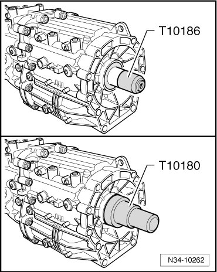

Output Shaft Seal
Output Shaft Seal
Special tools, testers and auxiliary items required
• Puller (T10055)
• Adapter (T10055/2)
• Sleeve (T10180)
• Thrust piece (T10186)
Removing
- Remove transfer case.
- To pull out seal, insert sheet metal screw of approximately 4 mm in diameter into the seal - arrow -.

• Insert sheet metal screw in so that it jams between seal and metal ring.
• Do not insert sheet metal screw too far to avoid damaging bearing behind it.
- Pull out seal with puller (T10055).
Installing
- The new seal must be coated with Automatic Transmission Fluid (ATF), especially at the sealing lips.

- First place the sleeve for shaft seal (T10180) onto the output shaft, so that the seal cannot be damaged.

- Then, drive in the new seal up to the limit stop using the press tool for shaft seal (T10180). Do not cant sealing ring when doing this.
- Then check ATF level and top off. Refer to --> [ ATF Level Checking and Filling ] ATF Level Checking and Filling.